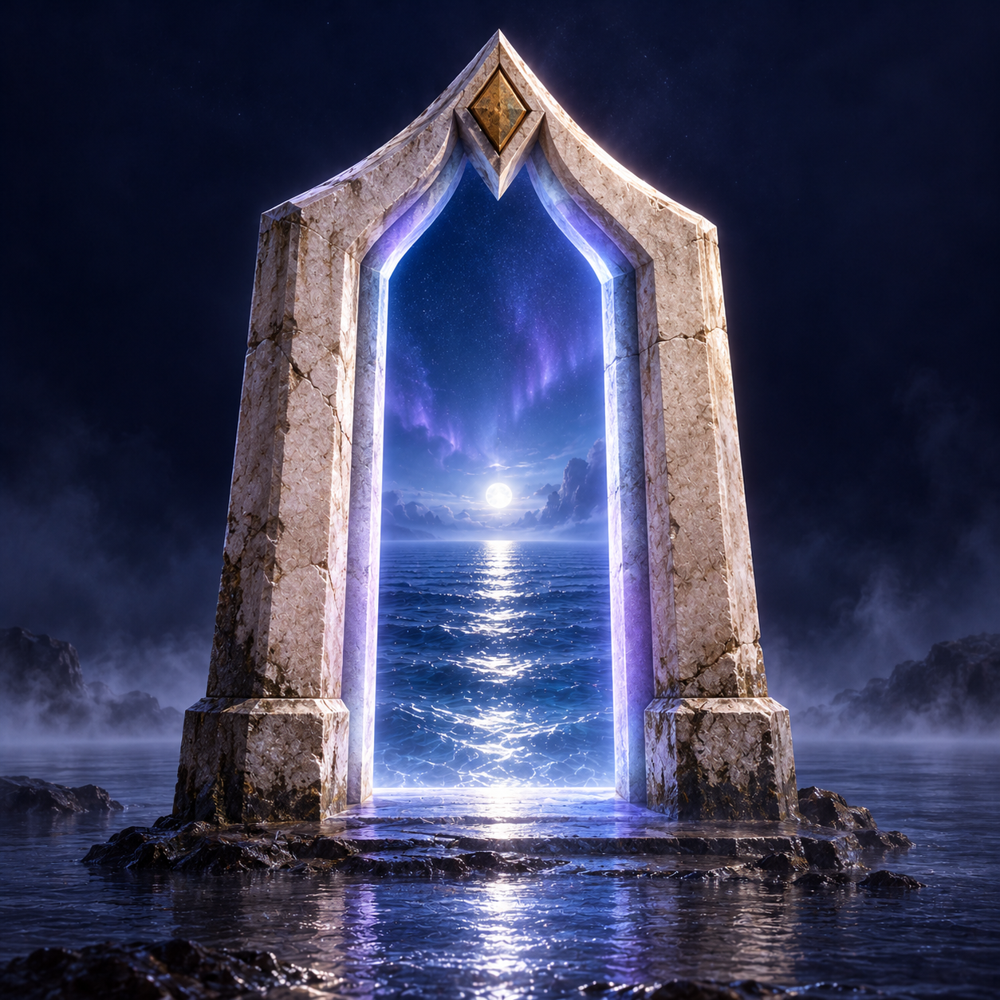

The readable index
A world is only as good
as what you put into it.
Example content, ready to replace.
Your story lives in data/site.json.
Loading example content…

KaimervaSummon your world.Open-source observatory / 001
Browse the contentKaimerva / beyond the ordinary
A place for your work, your questions, and everything still taking shape. Explore the world. Reveal its hidden field.
Three possible worlds
Surface instrument / 01A second way to see.
Wave interference · illustrative study
Two wave sources overlap to form an interference pattern. Drag across the sea or adjust Wave spacing to move them closer or farther apart.
Loading the world. Every destination is also available below.
World settings live in data/world.json.
Loading world settings…
The readable index
Example content, ready to replace.
Your story lives in data/site.json.
Loading example content…